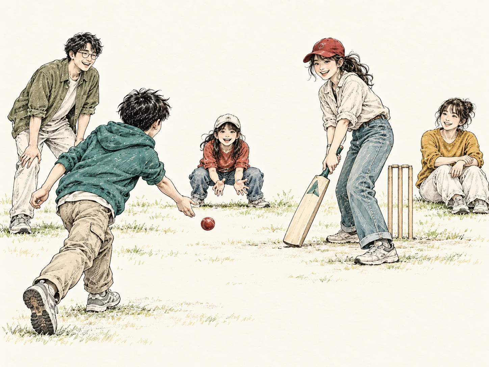

POEM / 文学・教材に描かれた風景
Six and Out
「シックス・アンド・アウト」
英国のクリケット作家G. D. Martineauの詩。でこぼこの場所で、街灯の柱をウィケット代わりにして、子どもたちが夢中で遊びます。
審判も観客も兼ねる得点係。公式規則より、その場の事情がルールを決める。最後は窓ガラスが割れる騒ぎまで！
インドの英語教材でも読まれている詩です。現代インドの実態を調査した記事ではありません。
参考教材 / 英語サイトへ移動Six and Out の解説を読む
クリケット、
まずは遊んでみよう。
11人ずつのチーム、広いグラウンド、専用の道具。クリケットは始めるのが大変そう？ でも、投げて、打って、捕る楽しさは、もっと身近なところにあります。
CRITT流の3人遊びから、世界の街角クリケット、ICCのCriiio、そして日本での体験へ。

PLAY CRICKET YOUR WAY.今いる場所から、一歩ずつ。気になるところから読んでも大丈夫。
※ この図はCRITTがおすすめする読み進め方です。上達の公式な段階や、競技形式の序列ではありません。
最初は難しいルールを知らなくてもいい。柔らかいボールと安全に打てる道具を用意して、まずはこんな遊びを。
何球か遊んだら役割を交代。慣れてきたら、ウィケットに見立てた目標物や得点ルールを加えてもいい。
近くから
やさしく。
ボールを
打ち返す。
追いかけて、
拾ってみる。
正式な試合だけがクリケットではありません。世界には、身近な場所や手元の道具に合わせて楽しんできた遊び方があります。ここでは、詩の世界と実際の文化を一つずつ紹介します。
「シックス・アンド・アウト」
英国のクリケット作家G. D. Martineauの詩。でこぼこの場所で、街灯の柱をウィケット代わりにして、子どもたちが夢中で遊びます。
審判も観客も兼ねる得点係。公式規則より、その場の事情がルールを決める。最後は窓ガラスが割れる騒ぎまで！
インドの英語教材でも読まれている詩です。現代インドの実態を調査した記事ではありません。
「ガリー・クリケット」
インドの路地や空き地などで楽しまれる、気軽なクリケット。集まった人数や場所に合わせて、柔らかいボールや身近なものを使い、ルールも工夫します。
打つ、追う、競う、笑う。 スタジアムがなくても、クリケットの面白さは変わりません。
こちらは詩ではなく、実際の遊び文化。場所や仲間によって遊び方はさまざまです。
※ 文学作品の登場人物の行動をそのまま真似せず、現実には道路や建物から離れた安全な場所で遊んでください。
「自由に遊ぶクリケット」は、子どもたちだけのものではありません。国際クリケット評議会（ICC）も、世界各地で親しまれている多様なクリケットを「Criiio（クリオ）」として紹介しています。
公園でも、屋内でも。人数や場所に合わせて、あなたたちのやり方で楽しんでいい。Criiioは、決まった一種類の簡易ルールというより、そんなクリケットの楽しさを広げる取り組みです。
もっとクリケットらしい動きを覚えたい人には、ICC公式の初心者向けプログラムや、日本語の教材も用意されています。
公園・広場・屋内など、安全に遊べるところで。
11人制にこだわらず、集まった仲間で。
投げる・打つ・捕る、入門教材や動画も。
公式Q&Aで、普通のクリケットとの違いや、どこで遊べるかを読む。
公式の説明を読む初心者向け8回のプログラム。日本語PDFの印刷用・インタラクティブ版があります。
日本語教材を探すバッティング、ボウリング、スローイング、キャッチングの基本動作。
技術動画を見る子ども向けの短いチャレンジや、身近な練習アイデアを集めたページ。
Kids Hub を見るICCの取り組みの紹介です。CRITTの3人遊びをICCが公式ルールとして認定しているわけではありません。
「海外の話だから」と思うかもしれません。でも日本でも、初めての人が参加しやすいCriiioの大会が開催されています。
日本クリケット協会（JCA）が紹介した2026年のクリオカップでは、柔らかいゴム製のボールを使い、比較的小さなスペースで短時間の試合を楽しんでいます。初心者も参加しやすい形式です。
CRITT流の3人遊びから始めてもいい。ICCの教材で学んでもいい。もう少し仲間と楽しみたくなったら、こうした大会や体験イベントを探すという道もあります。
いきなり本格的な11人制に挑戦しなくても大丈夫。自分のペースでクリケットに近づいてみましょう。
JCA公式記事で、6人制大会の様子を紹介。開催実績を見るためのリンクです。
JCAの記事を読むJCAの大会・イベント一覧へ。開催時期や参加条件は各案内で確認してください。
JCAイベント情報を見る3人で遊ぶ。詩を読む。世界の街角を知る。Criiioの教材を開く。地域の活動に参加する。どこからでも、あなたのクリケットは始められます。
クリケットは、思っているよりずっと自由だ。
クリケットガイドへ戻る →